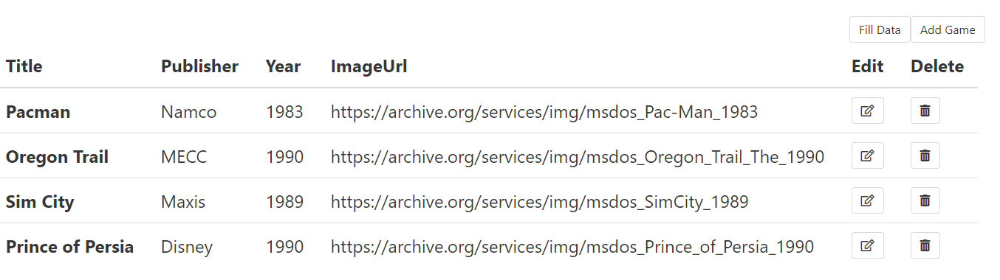

To Do Today:
-
How Angular fits in MEAN
-
Transform our Games app using Angular
npm i -g @angular/cli
Create a new folder 'lesson11' and cd into it then type:
ng new frontend
express -e --git backend
ng serve -o
cd into frontend/
ng g c messages
<h1>hello {{ title }}</h1>
<app-messages></app-messages>
import { MessagesComponent } from './messages/messages.component';
...
declarations: [AppComponent, MessagesComponent],
- in app.component.html, type the following code
- Verify name app-messages is taken from messages.component.ts
- ensure in app.module.ts it has the import and declaration of messages
Getting data
export class MessagesComponent implements OnInit {
messages = [{text: 'hello world', owner: 'AV'},{ text: 'meow', owner: 'cat'}];
...
<div *ngFor="let message of messages">
{{ message.text }} by {{ message.owner }}
</div>
- in messages.component.ts, create a messages array with 2 objects
- in messages.component.html, use ngFor to loop the messages array
- ng serve
cd backend/
const messages = [
{ text: 'hello world', owner: 'Albert V.' },
{ text: 'meow', owner: 'Jeta the cat' },
];
router.get('/messages', (req, res) => {
res.json(messages);
});
- npm i
- in routes/index.js create a different messages array with 2 objects
- in routes/index.js create a get route to /messages that returns messages in json
- nodemon
Connecting backend data to frontend
import { HttpClient } from '@angular/common/http';
...
export class WebService {
constructor(private httpClient: HttpClient) {}
getMessages() {
return this.httpClient
.get('http://localhost:3000/messages').toPromise();
import { WebService } from './web.service';
import { HttpClientModule } from '@angular/common/http';
...
imports: [BrowserModule, HttpClientModule],
providers: [WebService],
- ng g service web
- in web.service.ts import HttpClient and use it to getMessages
- in app.module.ts import HttpClientModule and WebService
Connecting backend data to frontend
import { WebService } from '../web.service';
...
export class MessagesComponent implements OnInit {
messages: object;
constructor(private webService: WebService) {}
async ngOnInit() {
let response = await this.webService.getMessages();
this.messages = response;
}
app.use((req, res, next) => {
res.header('Access-Control-Allow-Origin', '*');
res.header(
'Access-Control-Allow-Headers',
'Origin, X-Requested-With, Content-Type, Accept',
);
next();
});
- in messages.component.ts import WebService
- in messages.component.ts use async/await to getMessages
- in backend/ app.js add CORS middleware (ensure it's above our get /messages)
ng build into express public/
"outputPath": "../backend/public",
- in angular.json change outputPath to express' public folder
- ng build
- cd into backend/ then nodemon (note: kill ng serve)
- Go to localhost:3000/index.html
- Go to localhost:3000/messages
Exercise - 15 minutes
return this.httpClient.get('http://localhost:3000/games').toPromise();
<div *ngFor="let message of messages">
{{ message.title }} by {{ message.publisher }} of {{ message.year}} at {{ message.imageUrl }}
</div>
- in web.service.ts change the url to /games
- in messages.component.html change the expressions to match our game model
- in lab5/ (or other) change /games to send json data instead of rendering a view
Retro Games
adding Angular
Exercise - 15 minutes
return this.httpClient.get('http://localhost:3000/games').toPromise();
<div *ngFor="let message of messages">
{{ message.title }} by {{ message.publisher }} of {{ message.year}} at {{ message.imageUrl }}
</div>
- in web.service.ts change the url to /games
- in messages.component.html change the expressions to match our game model
- in lab5/ (or other) change /games to send json data instead of rendering a view
- (or erase backend and replace it with lab5)
npm i bulma
"styles": [
"node_modules/bulma/css/bulma.min.css",
"src/styles.css"
],
- npm i bulma
- in angular.json add to styles "node_modules/bulma/css/bulma.min.css"
ng generate component navbar
- ng g c navbar
- Copy from Blackboard navbar html
- Paste it into navbar.component.html
- In index.html include font awesome 5
creating routes
import { RouterModule } from '@angular/router';
...
imports: [BrowserModule, RouterModule.forRoot(routes), HttpClientModule],
const routes = [
{ path: '', component: HomeComponent },
{ path: 'register', component: RegisterComponent },
{ path: 'login', component: LoginComponent },
{ path: 'admin', component: AdminComponent },
{ path: 'play', component: PlayComponent },
{ path: 'games', component: GamesComponent },
{ path: 'edit', component: EditComponent },
{ path: 'add', component: AddComponent }
];
- in app.module.ts import RouterModule/Routes and include it in imports
- ng g c Home (etc.)
- in app.module.ts create array of routes
- in app.component.html add router outlet
<app-nav></app-nav>
<div class="container">
<router-outlet></router-outlet>
</div>
games page
import { Component, OnInit } from '@angular/core';
import { WebService } from '../web.service';
@Component({
selector: 'app-games',
templateUrl: './games.component.html',
styleUrls: ['./games.component.css']
})
export class GamesComponent implements OnInit {
games: Array<object>;
response: any;
constructor(private webService: WebService) {}
async ngOnInit() {
this.response = await this.webService.getGames();
this.games = this.response;
}
}
- in games.component.html copy/paste from Blackboard games markup
- in games.component.ts import Webservice and use it in ngOnInit
- in web.service.ts create getGames(); Delete messages component and references to it in app.module.ts
basehref: string = 'http://localhost:3000';
...
getGames() {
return this.httpClient.get(this.basehref + '/games').toPromise();
}
Exercise - 20 minutes
Using the same techniques, create the admin table for /admin
<a [routerLink]="['./']">Home</a>
References
- Lynda.com - Building Angular and Node Apps with Authentication
- youtube.com - Traversy channel | Mean Stack